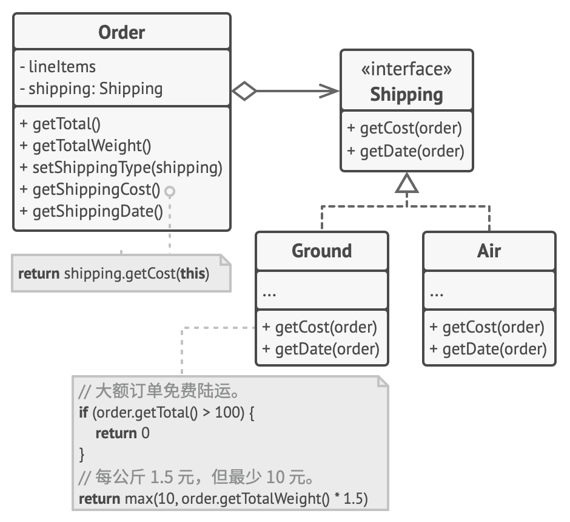
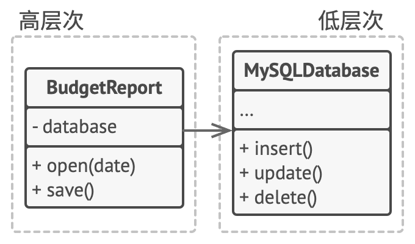

7.2.面向对象软件设计原则
谁发明了设计模式？
模式的概念是由克里斯托佛·亚历山大在其著作 《 建筑模式语言》 中首次提出的 。本书介绍了城市设计的 “ 语言 ” ，而该语言的基本单元就是模式。它们可以描述窗户应该在多高 、一座建筑应该有多少层以及一片街区应该有多大面积的植被等等。
埃里希·伽玛 、约翰·弗利赛德斯 、拉尔夫·约翰逊和理查德·赫尔姆这四位作者接受了模式的概念 。 1994 年，他们出版了《设计模式：可复用面向对象软件的基础 一书 ，将设计模式的概念应用到程序开发领域中 。该书提供了 23 个模式来解决面向对象程序设计中的各种问题，很快便成为了畅销书。由于书名太长，人们将其简称为 “ 四人组 （ Gang of Four ，GoF ） 的书 ”，并且很快进一步简化为 “ GoF 的书”。此后 ，人们又发现了几十种面向对象的模式。 “ 模式方法 ” 开始在其他程序开发领域中流行起来。如今，人们还在面向对象设计领域之外提出了许多其他的模式。
软件设计原则
优秀的设计应该具有以下特征：
- 代码复用
代码复用是减少开发成本时最常用的方式之一。其意图非常明显：与其反复从头开发，不如在新对象中重用已有代码。
这个想法表面看起来很棒，但实际上要让已有代码在全新的上下文中工作 ，通常还是需要付出额外努力。组件间紧密的耦合、对具体类而非接口的依赖和硬编码的行为都会降低代码的灵活性。
- 扩展性
有很多原因会导致软件的修改：
- 对问题有了更好的理解，需要重构代码
- 出现了意料之外的变化
- 需求的变化
封装变化的内容
将经常变化的功能封装进新的函数或者类，让它们专门负责这些需要经常变化的实现。
面向接口进行开发，而不是面向实现
左边的代码，Cat.eat()方法直接依赖于Sausage的实现。右边的代码，Cat.eat()方法依赖于Food接口，由Sausage类实现了该接口的功能。
组合优于继承
继承可能是类之间最明显、最简便的代码复用方式。如果你有两个代码相同的类，就可以为它们创建一个通用的基类，然后将相似的代码移动到其中。不过，继承这件事通常只有在程序中已包含大量类， 且修改任何东西都非常困难时才会引起关注。 下面就是此类问题的清单。
- 子类不能减少超类的接口。 你必须实现父类中所有的抽象方法， 即使它们没什么用。
- 在重写方法时， 你需要确保新行为与其基类中的版本兼容。 这一点很重要， 因为子类的所有对象都可能被传递给以超类对象为参数的任何代码， 相信你不会希望这些代码崩溃的。
- 继承打破了超类的封装， 因为子类拥有访问父类内部详细内容的权限。 此外还可能会有相反的情况出现， 那就是程序员为了进一步扩展的方便而让超类知晓子类的内部详细内容。
- 子类与超类紧密耦合。 超类中的任何修改都可能会破坏子类的功能。
- 通过继承复用代码可能导致 平行继承体系 的产生。 继承通常仅发生在一个维度中。 只要出现了两个以上的维度， 你就必须创建数量巨大的类组合， 从而使类层次结构膨胀到不可思议的程度。
组合是代替继承的一种方法。继承代表类之间的 “是” 关系 （汽车是交通工具）， 而组合则代表 “有” 关系（汽车有一个引擎）。
必须一提的是， 这个原则也能应用于聚合（一种更松弛的组合变体， 一个对象可引用另一个对象， 但并不管理其生命周期）。 例如： 一辆汽车上有司机， 但是司机也可能会使用另一辆汽车， 或者选择步行而不使用汽车。
下面的示例继承中的平行继承体系问题（子类爆炸问题）：
假如你需要为汽车制造商创建一个目录程序。 该公司同时生产 汽车Car和 卡车Truck ， 车辆可能是电动车Electric或 汽油车Combustion ； 所有车型都配备了 手动控制manual control或 自动驾驶Autopilot功能。
在多个维度上扩展一个类 （汽车类型 × 引擎类型 × 驾驶类型） 可能会导致子类组合的数量爆炸。我们可以使用组合来解决这个问题：

汽车对象可将行为委派给其他对象， 而不是自行实现。还有一个好处是你可以在运行时对行为进行替换。 例如， 你可以通过重新为汽车对象分配一个不同的引擎对象来替换已连接至汽车的引擎。
单一职责原则
Single Responsibility Principle
修改一个类的原因只能有一个。尽量让每个类只负责软件中的一个功能，并将该功能完全封装在该类中。
如果一个类负责过多的功能，当程序规模不断扩大、变更不断增加后，类会变得过于庞大，以至于你无法记住其细节。查找代码将变得非常缓慢， 你必须浏览整个类、甚至整个程序才能找到需要的东西。
还有一点： 如果类负责的东西太多， 那么当其中任何一件事发生改变时， 你都必须对类进行修改。 而在进行修改时， 你就有可能改动类中自己并不希望改动的部分。
开闭原则
open/closed Principle
对于扩展， 类应该是 “开放” 的；对于修改， 类则应是 “封闭” 的。
这个原则看上去令人困惑，因为”开放“和”封闭“两个词是互斥的。实际上，“开放”和“封闭“是针对不同的东西而言：
- 开放：如果可以通过继承对一个类进行扩展，并且该类的子类可以做任何事情（如新增方法或成员变量、 重写基类行为等）， 那么这个类就是开放的。 有些编程语言允许你通过特殊关键字（例如 final ）来限制对于类的进一步扩展， 这样类就不再是 “开放” 的了。
- 封闭：如果某个类已做好了充分的准备并可供其他类使用的话 （即其接口已明确定义且以后不会修改）， 那么该类就是封闭（你可以称之为完整）的。
本原则的主要理念是新功能通过增加新代码实现，而不修改已有代码。 更具体来说，新功能通过子类实现，而不修改已有的基类。
如果一个类已经完成开发、 测试和审核工作， 而且属于某个框架或者可被其他类的代码直接使用的话， 对其代码进行修改就是有风险的。 你可以创建一个子类并重写原始类的部分内容以完成不同的行为， 而不是直接对原始类的代码进行修改。 这样你既可以达成自己的目标， 但同时又无需修改已有的原始类客户端。
这条原则并不能应用于所有对类进行的修改中。 如果你发现类中存在缺陷， 直接对其进行修复即可， 不要为它创建子类。 子类不应该对其父类的问题负责。
示例
你的电子商务程序中包含一个计算运输费用的订单Order类， 该类中所有运输方法都以硬编码的方式实现。 如果你需要添加一个新的运输方式， 那就必须承担对订单类造成破坏的可能风险来对其进行修改。

你可以通过应用策略模式来解决这个问题。 首先将运输方法抽取到拥有同样接口的不同类中。
在Python中，<<interface>>一般通过抽象类实现，派生类继承抽象类，并实现接口的具体功能。此时，通过继承抽象类，并实现接口，这称为“开放”；依赖于抽象类接口的类不需要作修改，这称为“封闭”。

现在， 当需要实现一个新的运输方式时， 你可以通过扩展 运输方式Shipping接口来新建一个类， 无需修改任何订单类的代码。 当用户在 UI 中选择这种运输方式时，订单类客户端代码会将订单链接到新类的运输方式对象。
此外，根据单一职责原则，这个解决方案能够让你将运输时间的计算代码移动到与其相关度更高的类中。
里氏替换原则
Liskov Substitution Principle
当扩展一个类时， 应该能在不修改客户端代码的情况下将子类的对象替代父类对象进行传递。这意味着子类必须保持与父类行为的兼容。 在重写一个方法时， 你要对基类行为进行扩展， 而不是将其完全替换。
替代原则包含一组对子类 （特别是其方法） 的形式要求：
- 子类方法的参数类型必须与其超类的参数类型相匹配或更加抽象1。
假设
A类有个方法用于给猫咪喂食：feed(Cat c)。 客户端代码总是会将cat对象传递给该方法。
- 好的方式： 子类
B继承类A，并将feed方法重写为feed(Animal c)，使其能够给任何 “动物 （animal， 即 ‘猫’ 的超类）” 喂食。如果现在你将类A的对象替换为子类B的对象，程序仍将正常工作。- 不好的方式： 子类
B继承类A，并将feed方法重写为feed(BengalCat c)，其只能够给“孟加拉猫（BengalCat， 一个 ‘猫’ 的子类）” 喂食。如果现在你将类A的对象替换为子类B的对象，由于该方法只能对特殊种类的猫进行喂食， 因此无法为传递给客户端的普通猫提供服务， 从而将破坏所有相关的功能。
- 子类方法的返回值类型必须与超类方法的返回值类型或是其子类别相匹配。
假如你的一个类中有一个方法
buyCat(): Cat。 客户端代码执行该方法后的预期返回结果是任意类型的 “猫”。
好的方式： 子类将该方法重写为：
buyCat(): BengalCat。客户端将获得一只 “孟加拉猫”，自然它也是一只 “猫”， 因此一切正常。不好的方式： 子类将该方法重写为：
buyCat(): Animal。现在客户端代码将会出错， 因为它获得的是自己未知的动物种类，如果返回一只短吻鳄，则不适用于为一只 “猫” 而设计的结构。
- 子类中的方法不应抛出基础方法预期之外的异常类型。
客户端代码捕捉异常的代码块是针对的是基础方法可能抛出的异常类型。 因此， 预期之外的异常可能会穿透客户端的防御代码， 从而使整个应用崩溃。
- 子类不应该加强其前置条件。
例如， 基类的方法有一个
int类型的参数。 如果子类重写该方法时， 要求传递给该方法的参数值必须为正数 （如果该值为负则抛出异常）， 这就是加强了前置条件。 客户端代码之前将负数传递给该方法时程序能够正常运行， 但现在使用子类的对象时会使程序出错。
- 子类不能削弱其后置条件。
假如你的某个类中有个方法需要使用数据库， 该方法应该在接收到返回值后关闭所有活跃的数据库连接。
你创建了一个子类并对其进行了修改， 使得数据库保持连接以便重用。 但客户端可能对你的意图一无所知。 由于它认为该方法会关闭所有的连接， 因此可能会在调用该方法后就马上关闭程序， 使得无用的数据库连接对系统造成 “污染”。
- 超类的不变量必须保留。 这很可能是所有规则中最不 “形式” 的一条。 不变量是让对象有意义的条件。
不变量的规则是最容易违反的， 因为你可能会误解或没有意识到一个复杂类中的所有不变量。 因此， 扩展一个类的最安全做法是引入新的成员变量和方法， 而不要去招惹超类中已有的成员。 当然在实际中， 这并非总是可行。
- 子类不能修改超类中私有成员变量的值。
有些编程语言允许通过反射机制来访问类的私有成员。 还有一些语言 （Python 和 JavaScript） 没有对私有成员进行任何保护。
接口隔离原则
Interface Segregation Principle
客户端不应被强迫依赖于其不使用的方法。
假如你创建了一个程序库，它能让程序方便地与多种云计算供应商进行整合。尽管最初版本仅支持阿里云服务，但它也覆盖了一套完整的云服务和功能。
假设所有云服务供应商都与阿里云一样提供相同种类的功能。 但当你着手为其他供应商提供支持时， 程序库中绝大部分的接口会显得过于宽泛。 其他云服务供应商没有提供部分方法所描述的功能。
尽管你仍然可以去实现这些方法并放入一些桩代码， 但这绝不是优良的解决方案。 更好的方法是将接口拆分为多个部分。 能够实现原始接口的类现在只需改为实现多个精细的接口即可。 其他类则可仅实现对自己有意义的接口。

与其他原则一样， 你可能会过度使用这条原则。 不要进一步划分已经非常具体的接口。 记住， 创建的接口越多， 代码就越复杂。 因此要保持平衡。
依赖倒置原则
Dependency Inversion Principle
高层次的类不应该依赖于低层次的类。 两者都应该依赖于抽象接口。 抽象接口不应依赖于具体实现。 具体实现应该依赖于抽象接口。
通常在设计软件时， 你可以辨别出不同层次的类：
- 低层次的类实现基础操作 （例如磁盘操作、 传输网络数据和连接数据库等）。
- 高层次类包含复杂业务逻辑以指导低层次类执行特定操作。
有时人们会先设计低层次的类， 然后才会开发高层次的类。当你在新系统上开发原型产品时， 这种情况很常见。由于低层次的东西还没有实现或不确定，你甚至无法确定高层次类能实现哪些功能。如果采用这种方式，业务逻辑类可能会更依赖于低层原语类。
依赖倒置原则建议改变这种依赖方式，将高层次的类的依赖抽象成接口，让低层次类实现接口，而高层次类只需要调用接口，不需要调用低层次的类。依赖倒置原则通常和 开闭原则 共同发挥作用： 你无需修改已有类就能用不同的业务逻辑类扩展低层次的类


-
更通用 ↩